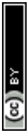
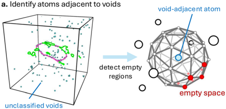
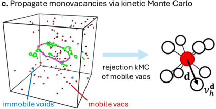
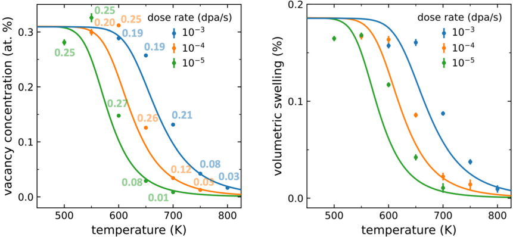
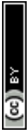
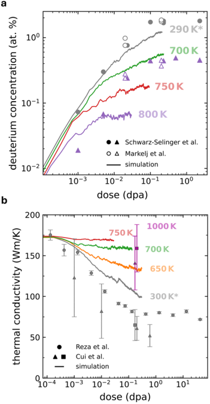
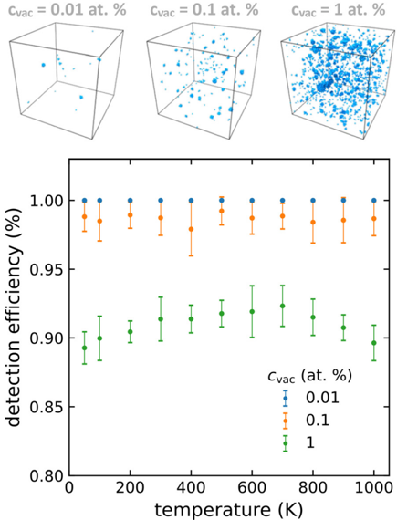
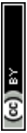
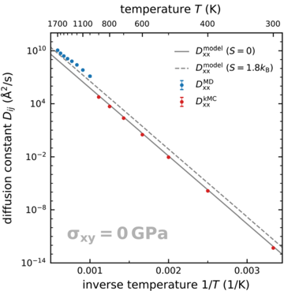
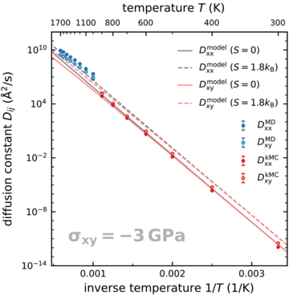

Perfecto
Voy a explicarte este paper en detalle, en español y con interpretación física, como si lo estuviéramos estudiando juntos para investigación.
Paper: “Atomistic simulations of irradiation damage on the engineering timescale: examining the dose rate effect in tungsten”
Idea general del paper (visión global)
El trabajo propone un nuevo método de simulación atomística acelerada para estudiar daño por irradiación en metales (especialmente tungsteno) en escalas de tiempo reales (horas-años).
Problema central:
- La dinámica molecular (MD) solo puede simular hasta microsegundos
- Pero los experimentos y la vida útil de materiales nucleares ocurren en horas, días o años
Entonces el paper propone:
Un método híbrido MD + kinetic Monte Carlo (kMC)
para acelerar el movimiento de vacancias sin perder la física real.
Contexto físico: daño por irradiación
Cuando una partícula energética (neutrón, ion, etc.) golpea un material:
- Transfiere energía a un átomo
- Ese átomo se convierte en PKA (primary knock-on atom)
- Produce una cascada de colisiones
-
Se generan defectos:
-
Vacancias
- Intersticiales
- loops de dislocación
- voids
La dosis se mide como:
[
\text{dpa} = \text{displacements per atom}
]
Y la dose rate es:
[
\dot{f} = \text{dpa/s}
]
La microestructura final depende fuertemente de:
- temperatura
- dose rate
- movilidad de defectos
⏱ Problema fundamental de MD
Los átomos vibran a:
[
10^{13},\text{Hz}
]
Entonces:
- timestep MD ≈ (10^{-15}) s
- incluso con miles de millones de pasos
solo se simulan microsegundos
Pero:
- defectos térmicos evolucionan en horas o días
por eso MD pura no sirve.
Idea clave del método del paper
El paper usa un concepto fundamental:
⭐ Separación de escalas de tiempo
En metales BCC:
- intersticiales → difunden MUY rápido
- vacancias → difunden lento
Entonces:
- procesos rápidos → MD normal
- procesos lentos → acelerar con kMC
Método híbrido propuesto
Cada ciclo de simulación:
1⃣ MD corta
Se corre MD por unos picosegundos
→ relaja procesos rápidos
2⃣ Detectar vacancias
Usan algoritmo geométrico:
- miran espacio vacío alrededor de átomos
- agrupan átomos vecinos
- comparan grafos de conectividad
-
identifican:
-
monovacancy
- divacancy
Muy importante:
No deben romper clusters grandes por error.
3⃣ Acelerar difusión de vacancias
Se usa:
rejection kinetic Monte Carlo
La tasa de salto:
[
\nu = \nu_D e^{-E_m/kT}
]
donde:
- (E_m ≈ 1.73) eV (barrera migración W)
- depende del stress local
Esto es clave:
incluyen efecto del campo elástico en difusión
(usando dipolo elástico).
Resultado conceptual del método
Permite simular:
- evolución microestructural
- recombinación defectos
- formación voids
en tiempos mucho más largos
sin parámetros ajustables.
Simulaciones realizadas
Sistema:
- tungsteno BCC
- 1 millón de átomos
- cascadas de 10 keV
Condiciones:
Dose rate:
- (10^3)
- (10^4)
- (10^5) dpa/s
Temperatura:
- 500–800 K aprox.
Resultado físico principal
⭐ Efecto fundamental:
Aumentar temperatura
o disminuir dose rate
reduce la concentración de defectos
Porque:
- vacancias se vuelven móviles
- recombinan con intersticiales
Entonces aparece:
steady-state defect concentration
balance:
- generación por cascadas
- recombinación térmica
🫧 Formación de voids
A alta temperatura:
- vacancias se agrupan
- forman void clusters nanoscale
Especialmente si hay:
dislocation loop inicial
(actúa como sink de intersticiales)
Esto produce:
- menos recombinación
- más vacancias libres
- mayor swelling
Modelo analítico simple (rate theory)
Derivan ecuación:
[
\frac{dc}{dt}
=============
-4\pi DZR c^2
+
\left(1-\frac{c}{c_{sat}}\right) g \dot{f}
]
Interpretación:
- primer término → recombinación
- segundo → generación por irradiación
Resultado:
[
c_{steady}
==========
\frac{2c_{sat}}{1+\sqrt{1+w}}
]
Muy importante:
El modelo reproduce simulación
Sin parámetros libres
Swelling volumétrico
Aproximan:
[
\varepsilon_v ≈ 0.6,c(t)
]
porque:
- intersticial cluster → volumen ≈ 1 atómico
- vacancia → ≈ 0.4
Limitaciones del método
A temperatura alta:
- vacancias saltan millones de veces por hora
Entonces:
incluso el método acelerado se vuelve caro
Ejemplo:
Simular 1 h a 900 K
≈ (2\times10^{10}) pasos MD equivalentes.
Comparación con experimentos
Comparan con:
- retención de deuterio
- conductividad térmica
Resultado:
acuerdo cualitativo
subestiman defectos a alta T
Posible causa:
- simulación no incluye impurezas
(C, N, O estabilizan vacancias)
⭐ Conclusión científica del paper
Este paper demuestra:
Se puede extender simulación atomística a tiempos reales
usando aceleración selectiva.
Resultados físicos clave:
- steady state defect concentration depende de dose rate y T
- sinks (loops) aumentan swelling
- formación de voids requiere movilidad de vacancias
Si quieres
Puedo ahora:
⭐ hacerte:
- un resumen ultra-corto tipo abstract
- una explicación matemática paso a paso
- una interpretación física aplicada a tu simulación PKA
- o ayudarte a replicar este método en LAMMPS
¿Qué prefieres?
Perfecto
La Figura 2 es probablemente la más importante del paper, porque muestra el algoritmo central del método híbrido MD + kMC.
Vamos a explicarla muy en detalle (física + computacional + conceptual).
Figura 2 — Algoritmo de aceleración de vacancias
(vacancy-acceleration algorithm)
Esta figura muestra cómo el método acelera la evolución microestructural.
La idea general:
En lugar de simular TODO con MD
se acelera solamente la difusión de vacancias
La figura tiene 3 partes: a, b, c
(a) Identificación de átomos cerca de voids
Qué muestra físicamente
Se parte de una microestructura irradiada:
- dislocation lines
- voids
- defectos puntuales
El algoritmo debe encontrar:
Dónde hay vacancias
Pero:
- una vacancia no es un átomo
- entonces no es trivial detectarla
Método geométrico
Para cada átomo:
1⃣ Se dibuja una esfera alrededor
radio ≈ distancia primer vecino BCC
2⃣ Se muestrean puntos sobre esa esfera
3⃣ Si alguno de esos puntos:
[
\text{está suficientemente lejos de otros átomos}
]
entonces hay espacio vacío
Ese átomo está junto a una vacancia
Esto es muy inteligente porque:
no necesita lattice perfecto
funciona con deformación
funciona con defectos
Interpretación física
Una vacancia crea:
- volumen libre local
- reducción de coordinación
Entonces:
el algoritmo detecta “regiones de baja densidad atómica”
Esto es básicamente:
⭐ un detector topológico de defectos
(b) Clustering de átomos alrededor de la vacancia
Ahora ya sabemos:
qué átomos están cerca de vacío
Pero falta:
saber si es
- monovacancy
- divacancy
- cluster
Paso computacional
1⃣ Se agrupan los átomos detectados
por proximidad
2⃣ Se construye un grafo de conectividad
- nodos = átomos
- enlaces = vecinos
3⃣ Ese grafo se compara con grafos pre-calculados
Si coincide:
- se identifica tipo de defecto
Esto es:
⭐ pattern recognition geométrico
Por qué es crucial
Si el algoritmo confundiera:
- un cluster grande con varias vacancias aisladas
el método kMC podría:
romper el cluster artificialmente
destruir la física real de nucleación de voids.
Entonces:
esta etapa es clave para la estabilidad del método
(c) Propagación de vacancias con kinetic Monte Carlo
Ahora ya sabemos:
- dónde están las vacancias
- cuáles pueden moverse
Entonces viene el corazón del método.
Qué hace el algoritmo
Para cada vacancia:
1⃣ Calcula posibles sitios vecinos
En BCC:
- hay 8 direcciones de salto
2⃣ Calcula la tasa de salto:
[
\nu_d
]
Dependiendo de:
- temperatura
- barrera migración
- stress local
esto es importante:
⭐ el campo elástico modifica la difusión
Luego aplica rejection kMC
Proceso:
- se genera número aleatorio
- se decide si la vacancia salta
- si salta → se elige dirección probabilísticamente
Si dos vacancias quieren ir al mismo sitio:
solo una se mueve.
Interpretación física
Esto representa:
difusión térmica estocástica de vacancias
pero acelerada en el tiempo.
Es equivalente a decir:
“simulamos directamente el siguiente evento relevante”
⭐ Idea conceptual global de la figura
La figura representa:
[
\text{MD corta} \rightarrow
\text{detectar vacancias} \rightarrow
\text{kMC para difundir}
]
y repetir.
Esto permite:
conservar dinámica real de cascadas
pero avanzar el tiempo térmico
Significado físico profundo
Esta figura formaliza una idea muy potente:
la evolución microestructural está dominada por:
- cascadas balísticas (rápidas)
- difusión de vacancias (lenta)
Entonces el algoritmo:
⭐ separa los procesos en escalas de tiempo
Esto es exactamente lo que tú estás buscando para:
- PKA
- defect evolution
- swelling
Resumen ultra claro
Figura 2 muestra:
1⃣ Cómo detectar vacancias
2⃣ Cómo clasificarlas
3⃣ Cómo moverlas probabilísticamente
para simular daño por irradiación en tiempos reales.
⭐ Si quieres
Puedo ahora:
hacerte un diagrama simplificado tipo pizarrón
traducir la figura a pseudo-código paso a paso
explicarte cómo implementarlo en LAMMPS + Python
o conectar esta figura con tu simulación PKA
¿Qué te serviría más?
Figuras del Paper (17)
Sin caption
Figura en pagina 1.
Sin caption
Figura en pagina 1.
Sin caption
Figura en pagina 1.

Fig. 1 Basic concepts of the recovery of irradiated tungsten illustrated by a rapid annealing simulation. (a) The microstructure of a tungsten crystal, here irradiated to 0.32 dpa, stores potential energy. As the crystal is heated, the microstructure evolves and coarsens, releasing the excess energy, shown here on top of the thermal energy. (b) The rate of energy release (bottom) allows inference on the activation energy by which the recovery proceeds. The simulated heating rate is unrealistically high with 2.5 -10 11 K s � 1 ; in experiment, recovery is expected to occur at lower temperature. Shown here is the mean recovery over five simulations, each starting with a different 0.32 dpa microstructure. Shaded areas indicate the standard error. (c) Microstructural view of tungsten during post-irradiation annealing. Pictured are dislocation lines (green: 1 2 h 111 i ) and void-type defects (blue). As monovacancies become mobile at around 1500 K at this heating rate, stage-III recovery commences: vacancies coalesce into vacancy-type dislocation loops and nanoscale voids, clearing up the microstructure. Shaded areas indicate the standard error over 5 independent annealing simulations.
Fig. 1 Basic concepts of the recovery of irradiated tungsten illustrated by a rapid annealing simulation. (a) The microstructure of a tungsten crystal, here irradiated to 0.32 dpa, stores potential energy. As the crystal is heated, the microstructure evolves and coarsens, releasing the excess energy, shown here on top of the thermal energy. (b) The rate of energy release (bottom) allows inference on the activation energy by which the recovery proceeds. The simulated heating rate is unrealistically high with 2.5 -10 11 K s � 1 ; in experiment, recovery is expected to occur at lower temperature. Shown here is the mean recovery over five simulations, each starting with a different 0.32 dpa microstructure. Shaded areas indicate the standard error. (c) Microstructural view of tungsten during post-irradiation annealing. Pictured are dislocation lines (green: 1 2 h 111 i ) and void-type defects (blue). As monovacancies become mobile at around 1500 K at this heating rate, stage-III recovery commences: vacancies coalesce into vacancy-type dislocation loops and nanoscale voids, clearing up the microstructure. Shaded areas indicate the standard error over 5 independent annealing simulations.

Sin caption
Figura en pagina 3.

Sin caption
Figura en pagina 4.

Fig. 2 Vacancy-acceleration algorithm. (a) Left: From the microstructure, shown are voids and dislocation lines, we identify atoms adjacent to void regions. Right: An atom is classified as adjacent to a void if any point (red) in a radius of | 1 2 h 111 i | from the atom is further than 0.75 -| 1 2 h 111 i | from any other atom. (b) Atoms adjacent to voids are clustered by proximity. For each cluster, a connectivity graph is constructed. If the graph is isomorphic to the precomputed graphs of the monovacancy or the two unique divacancy configurations, then the corresponding defect is identified. (c) As only monovacancies and divacancies are accelerated here, larger void structures are effectively immobile. For each vacancy, the hopping rates n ~ d h to the positions of its first neighbours d -are computed, accounting for the virial atomic stress at its current and target positions. The outcome of the random vacancy migration event is evaluated with a rejection kinetic Monte Carlo algorithm. Vacancy migration is considered a stochastically independent and spatially local process.
Fig. 2 Vacancy-acceleration algorithm. (a) Left: From the microstructure, shown are voids and dislocation lines, we identify atoms adjacent to void regions. Right: An atom is classified as adjacent to a void if any point (red) in a radius of | 1 2 h 111 i | from the atom is further than 0.75 -| 1 2 h 111 i | from any other atom. (b) Atoms adjacent to voids are clustered by proximity. For each cluster, a connectivity graph is constructed. If the graph is isomorphic to the precomputed graphs of the monovacancy or the two unique divacancy configurations, then the corresponding defect is identified. (c) As only monovacancies and divacancies are accelerated here, larger void structures are effectively immobile. For each vacancy, the hopping rates n ~ d h to the positions of its first neighbours d -are computed, accounting for the virial atomic stress at its current and target positions. The outcome of the random vacancy migration event is evaluated with a rejection kinetic Monte Carlo algorithm. Vacancy migration is considered a stochastically independent and spatially local process.

Sin caption
Figura en pagina 4.

Fig. 3 Simulated irradiation of tungsten as a function of dose, dose rate and temperature. Top row: the vacancy concentration is found to decrease with increasing temperature and decreasing dose rate. Note the broken x -axis scale. Bottom row: simulation snapshots of the highest simulated doses for the 10 � 4 dpa s � 1 dose rate, 0.30, 0.13 and 0.03 dpa, at a temperature of 650, 700, and 750 K, respectively. Pictured are dislocation lines (green: 1 2 h 111 i ), here all of interstitial type, and void-type defects (blue). Some void clustering is observed at 750 K.
Fig. 3 Simulated irradiation of tungsten as a function of dose, dose rate and temperature. Top row: the vacancy concentration is found to decrease with increasing temperature and decreasing dose rate. Note the broken x -axis scale. Bottom row: simulation snapshots of the highest simulated doses for the 10 � 4 dpa s � 1 dose rate, 0.30, 0.13 and 0.03 dpa, at a temperature of 650, 700, and 750 K, respectively. Pictured are dislocation lines (green: 1 2 h 111 i ), here all of interstitial type, and void-type defects (blue). Some void clustering is observed at 750 K.

Fig. 4 Simulated irradiation of tungsten containing an initial h 100 i loop of 13 nm diameter as a function of dose and temperature. (a) The initial dislocation loop appears to act as a sink, absorbing interstitials preferentially, which suppresses Frenkel pair recombination and consequently leads to a higher vacancy concentration. (b) No void formation is observed in the 650 K and 700 K structures, while a void of diameter 1.3 nm forms in the 750 K structure. (c) Simulation snapshots of the initial microstructure and highest simulated doses at 0.30, 0.14 and 0.03 dpa, at a temperature of 650, 700, and 750 K, respectively. Pictured are dislocation lines (green: 1 2 h 111 i , purple: h 100 i ) and void-type defects (blue). We find that the h 100 i loop is transformed to a 1 2 h 111 i loop as interstitials are absorbed.
Fig. 4 Simulated irradiation of tungsten containing an initial h 100 i loop of 13 nm diameter as a function of dose and temperature. (a) The initial dislocation loop appears to act as a sink, absorbing interstitials preferentially, which suppresses Frenkel pair recombination and consequently leads to a higher vacancy concentration. (b) No void formation is observed in the 650 K and 700 K structures, while a void of diameter 1.3 nm forms in the 750 K structure. (c) Simulation snapshots of the initial microstructure and highest simulated doses at 0.30, 0.14 and 0.03 dpa, at a temperature of 650, 700, and 750 K, respectively. Pictured are dislocation lines (green: 1 2 h 111 i , purple: h 100 i ) and void-type defects (blue). We find that the h 100 i loop is transformed to a 1 2 h 111 i loop as interstitials are absorbed.

Fig. 5 Comparing prediction to simulation of irradiation swelling in tungsten. A minimally simple and analytical model of vacancy recombination (line), see text, is consistent with the accelerated irradiation damage simulation (dots), especially under consideration that the model contains no adjustable parameters. The data points and error bars represent the mean and standard deviation of the vacancy or swelling values taken over the latest 20% of the simulation snapshots, with points labelled by the respective mean dose (dpa). Here, a Debye frequency for tungsten of n D = 8 -10 12 Hz was used. The thermal expansion strain was removed from the volumetric swelling strain shown here, see main text. The labels on each data point indicate the mean dose in dpa. While the doses appear low, the transient component of vacancy evolution appears already concluded, see Fig. 3.
Fig. 5 Comparing prediction to simulation of irradiation swelling in tungsten. A minimally simple and analytical model of vacancy recombination (line), see text, is consistent with the accelerated irradiation damage simulation (dots), especially under consideration that the model contains no adjustable parameters. The data points and error bars represent the mean and standard deviation of the vacancy or swelling values taken over the latest 20% of the simulation snapshots, with points labelled by the respective mean dose (dpa). Here, a Debye frequency for tungsten of n D = 8 -10 12 Hz was used. The thermal expansion strain was removed from the volumetric swelling strain shown here, see main text. The labels on each data point indicate the mean dose in dpa. While the doses appear low, the transient component of vacancy evolution appears already concluded, see Fig. 3.

Sin caption
Figura en pagina 10.

Fig. 6 Comparison to experiment. (a) Deuterium retention of tungsten irradiated at elevated temperature. Experimental data is shown for 290 K and 800 K, in polycrystalline (Schwarz-Selinger et al. 61 ) and singlecrystalline tungsten (Markelj et al. 62,63 ). At 290 K, experiment and simulation are in agreement. At 800 K, simulation underestimates the retained amount. (b) Thermal conductivity of irradiated tungsten. Experimental data is shown for 300 K (Reza et al. , 66 Cui et al. 67 ) and for 1000 K (Cui et al. 67 ). As before, experiment and simulation are in broad agreement for 300 K. At higher irradiation temperature, simulations underestimate defect concentration, resulting in an overestimation of thermal conductivity. Asterisks indicate that the simulated temperature is higher than stated, but representative for room temperature irradiation, see main text for details.
Fig. 6 Comparison to experiment. (a) Deuterium retention of tungsten irradiated at elevated temperature. Experimental data is shown for 290 K and 800 K, in polycrystalline (Schwarz-Selinger et al. 61 ) and singlecrystalline tungsten (Markelj et al. 62,63 ). At 290 K, experiment and simulation are in agreement. At 800 K, simulation underestimates the retained amount. (b) Thermal conductivity of irradiated tungsten. Experimental data is shown for 300 K (Reza et al. , 66 Cui et al. 67 ) and for 1000 K (Cui et al. 67 ). As before, experiment and simulation are in broad agreement for 300 K. At higher irradiation temperature, simulations underestimate defect concentration, resulting in an overestimation of thermal conductivity. Asterisks indicate that the simulated temperature is higher than stated, but representative for room temperature irradiation, see main text for details.

Fig. 7 Vacancy detection validation. Top: Microstructures with varying void volume fractions are analysed for monovacancies and divacancies as a function of temperature. Bottom: The fraction of detected over nominal vacancies, the detection efficiency, is found to be insensitive to thermal noise.
Fig. 7 Vacancy detection validation. Top: Microstructures with varying void volume fractions are analysed for monovacancies and divacancies as a function of temperature. Bottom: The fraction of detected over nominal vacancies, the detection efficiency, is found to be insensitive to thermal noise.

Sin caption
Figura en pagina 13.

Fig. 8 Kinetic Monte Carlo validation. Shown are the diffusion tensors of a tungsten monovacancy, with and without external stress, obtained from standard molecular dynamics ( D MD ), from the vacancy acceleration method ( D kMC ), and from the analytical model ( D model ). The molecular dynamics and accelerated method results are consistent with the model predictions with ( S = 1.8 k B) and without ( S = 0) the entropic contribution to the migration barrier, respectively. Error bars indicating the standard error are too small to be visible on this axis.
Fig. 8 Kinetic Monte Carlo validation. Shown are the diffusion tensors of a tungsten monovacancy, with and without external stress, obtained from standard molecular dynamics ( D MD ), from the vacancy acceleration method ( D kMC ), and from the analytical model ( D model ). The molecular dynamics and accelerated method results are consistent with the model predictions with ( S = 1.8 k B) and without ( S = 0) the entropic contribution to the migration barrier, respectively. Error bars indicating the standard error are too small to be visible on this axis.

Sin caption
Figura en pagina 14.